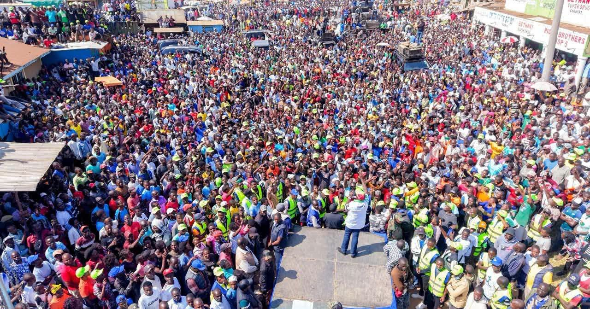
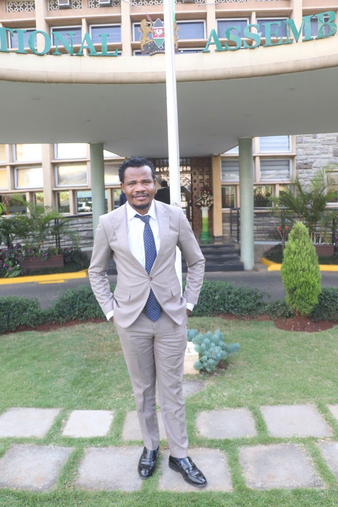
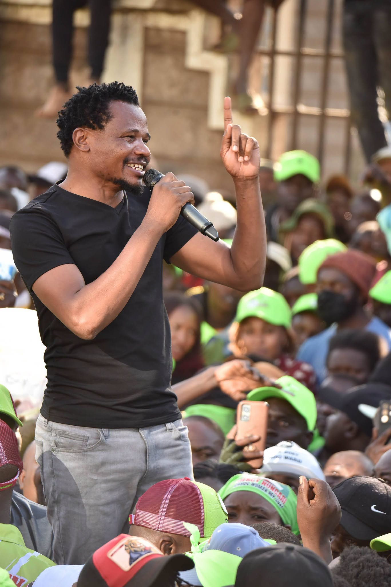
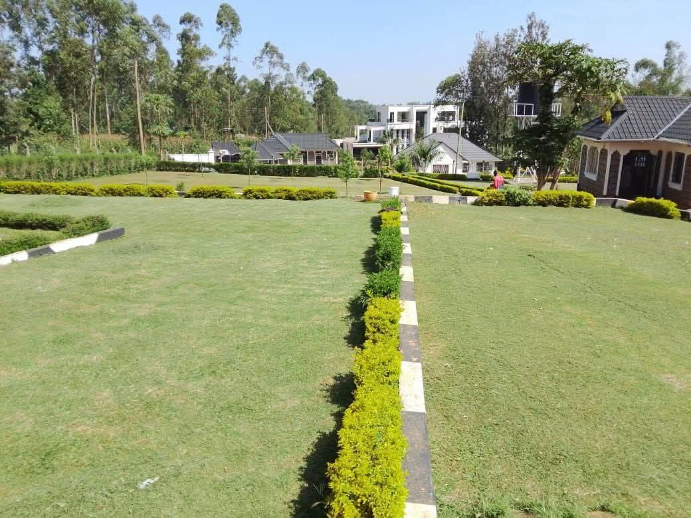
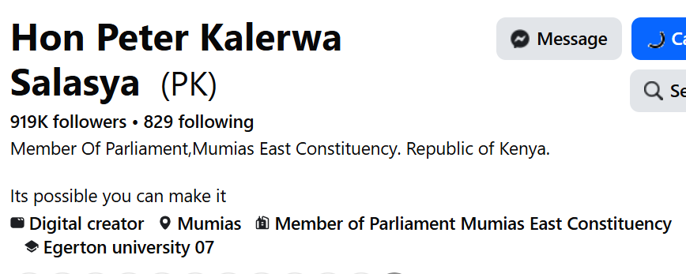

Constituency development projects
NG-CDF funds directed toward classrooms, bursaries for needy students, water access points and rural access roads across the ward units of Mumias East — projects residents can see and use.

Member of Parliament, Mumias East
From the ground in Mumias to the floor of the National Assembly, Hon. Peter Kalerwa Salasya is asking Mumias East for five more years to deliver.
Hon. Peter Kalerwa Salasya represents Mumias East Constituency in the National Assembly of the Republic of Kenya. A graduate of Egerton University, he entered public life determined to bring the concerns of ordinary residents — boda boda riders, cane farmers, small traders, students and young job seekers — directly into the corridors where laws and budgets are made.
What has set his term apart is accessibility. He built one of the largest direct followings of any first-term MP in the region, using it not just to broadcast but to listen, taking questions, complaints and ideas from constituents daily and carrying them into Parliament.

A second term is a chance to build on groundwork already laid, not to start over. Here is the case for continuity.
NG-CDF funds directed toward classrooms, bursaries for needy students, water access points and rural access roads across the ward units of Mumias East — projects residents can see and use.
Mumias East sits in the heart of Kenya's sugar belt. Raising farmers' payment delays and factory revival in Parliament has been a consistent thread of his advocacy on the floor and in committee.
Rather than a distant office, constituents have had a representative who takes to the streets and market centres, holds impromptu barazas, and responds to individual cases raised online and in person.
A digital-first approach to representation has given young people in Mumias East a louder, more visible seat in national conversations than the constituency has traditionally had.
Continued disbursement of education bursaries aimed at keeping students from struggling households in school through secondary and tertiary levels.
Consistent attendance and participation in National Assembly sessions, carrying Mumias East's name into national debate rather than leaving the seat silent.
These are the priorities the campaign is running on. Residents are encouraged to verify project specifics with the CDF office and to weigh them against other candidates before voting.


With a following built directly from Mumias East and beyond, constituents don't have to wait for a rare public appearance to be heard. Complaints, ideas and requests move faster when the MP is one message away.

Renew the mandate. Vote Hon. Peter Kalerwa Salasya for a second term.
Get involved